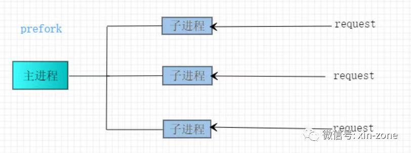
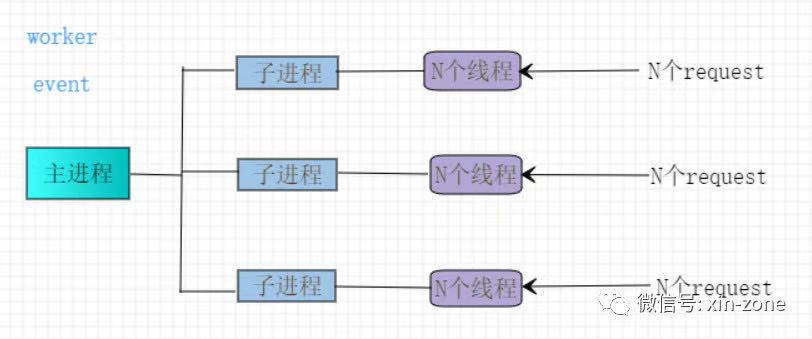

目前的web服务器，apache的httpd与nginx可以说是绝代双骄，一个是江湖老大哥，一个是后起之秀。虽然现在大家的首选是nginx，很多项目因为各种原因还是会选择使用apache的httpd作为web服务器。
随着最新版httpd 2.4的发布，event模块也变成了稳定版本，与nginx的性能差距再次缩小。
Apache httpd 服务器有三种MPM(多路处理模块)，分别是prefork,worker及event。这三种模块性格迥异，不同的模块对httpd的性能及使用场景会产生比较大的影响。
查看httpd服务器使用的哪个模块可以通过如下指令 httpd -l。从输出可以看出使用得是worker模式。1
2
3
4
5Compiled in modules:
core.c
mod_so.c
http_core.c
worker.c
MPM介绍
prefork
进程模式。每个请求都由一个子进程来处理。线程安全。不太适合高并发服务器。
- 工作原理如图：

worker
进程线程混合模式。父进程会创建子进程，每个子进程会创建多个工作线程以及一个监听线程。每一个线程负责处理一个http请求。
- 工作原理，如图：

event
进程线程混合模式。跟
worker模式很像，不同的是采用epoll模式，在2.4之前的版本是实验版本，现在已经稳定了。性能比worker要好很多。并在keepalive方面做了优化。
- 工作原理
与worker基本相同，这里就不放图了。
这三种模式，在启动的时候都会启动固定数量的子进程。同时三种模式都会创建一定数量的空闲子进程，以便新的请求进来时，可以直接使用。
通用配置
三种模式都有一些通用的参数指令,个别指令在不同模式下面含义有些许不同：
StartServers ：服务器启动时建立的子进程数。
MinSpareServers：空闲子进程的最小数量。当空闲子进程小于这个值时，父进程将会创建子进程。
MaxSpareServers：空闲子进程的最大数量。当空闲子进程大于这个值时，父进程会杀死多余的子进程。
MaxRequestWorkders：允许同时接受的最大接入请求数量；如果提升该值，也需要同时提高ServerLimit。任何超过了该值的请求数都要进入等待队列。在之前的版本被称为MaxClients。现在的版本也支持该参数。
注意： 在
worker和event模式下MaxRequestWorks=ServerLimit*ThreadsPerChild
ListenBacklog :半链接(pending connection)队列的最大长度。
ServerLimit: 服务器允许配置的进程数上限。
MaxConnectionsPerChild：每个子进程在其生命周期内允许最大的请求数量，如果请求总数已经达到这个数值，子进程将会结束，如果设置为0，子进程将永远不会结束。在之前的版本称之为MaxRequestsPerChild。
建议设置为非零，原因：
- 能够防止(偶然的)内存泄漏无限进行，从而耗尽内存。
- 给进程一个有限寿命，从而有助于当服务器负载减轻的时候减少活动进程的数量(重生的机会)。
配置样例 prefork模式1
2
3
4
5
6
7
8<IfModule prefork.c>
StartServers 5
MinSpareServers 10
MaxSpareServers 20
ServerLimit 1024
MaxRequestWorkders 1024
MaxRequestsPerChild 160
</IfModule>
worker 与 event 特有的配置参数
ThreadsPerChild：每个子进程，产生多少线程。不能超过ThreadLimit 。
ThreadLimit：每个子进程可配置的线程数。
AsyncRequestWorkerFactor：该参数event模式独有。默认值为2。可设置为小数，例如1.5。
该参数用来调整每个进程允许的连接数。只有当前连接数(不包括正处于closing状态的连接)小于下面的表达式的值时，子进程才允许接收新连接。最好不要调整该值，除非你经过大量测试。ThreadsPerChild +(AsyncRequestWorkerFactor * number of idle workers)
配置样例 worker模式
1 | <IfModule worker.c> |
web服务器常用运维指令
我把我常用得一些网络运维脚本送给各位吧，有凑字数嫌疑(偷笑)。
查看状态为established 的TCP连接:netstat -na|grep ESTABLISHED|wc -l。
统计哪个IP地址连接最多:netstat -na|grep ESTABLISHED|awk '{print $5}'|awk -F: '{print $1}'|sort|uniq -c|sort -r。
统计TCP连接状态:netstat -n | awk '/^tcp/ {++S[$NF]} END {for(a in S) print a, S[a]}'。
结束
关于apache httpd 的配置及MPM简介，上面的内容基本就说完了。稍微了解TCP及网络编程知识的同学可能会好奇，TCP连接对外提供服务的是一个固定端口，比如httpd默认是80端口，那apache httpd是如何做到同时支持多个请求的呢，也就是高并发。还有worker模式和event模式都是进程线程混合模式，为什么event模式就比worker模式优秀呢，也就是大家经常开玩笑说的，同样是九年义务教育你为什么如此优秀。我将在下篇文章中给大家详细说一说，下一篇文章才是硬核干货知识。